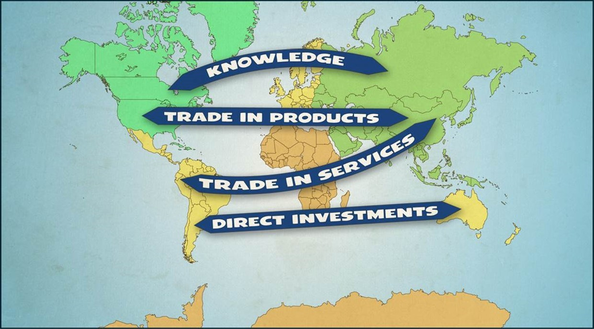
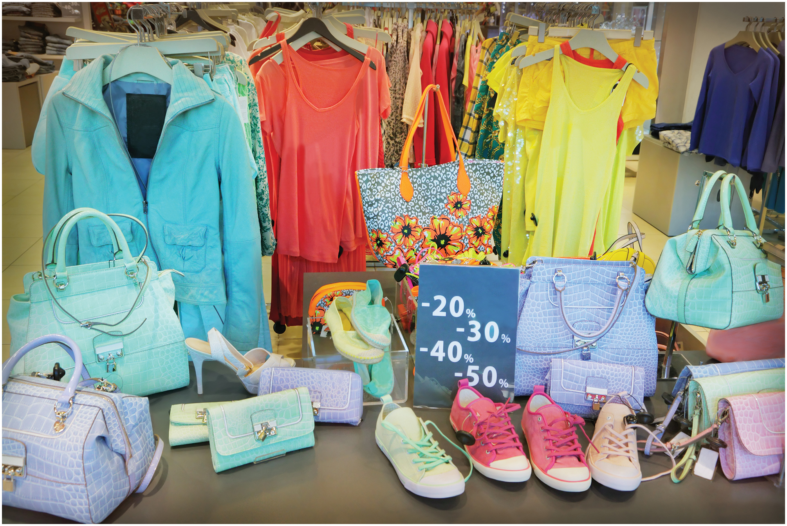
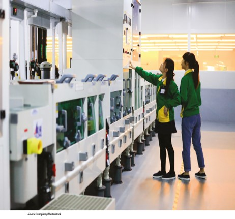
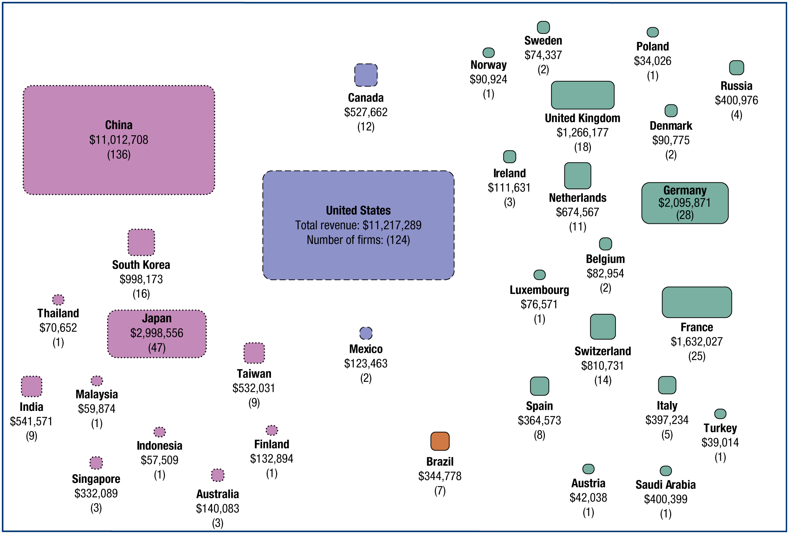

Introduction:
What Is International Business?
International Summer UniversityWU 2026 — Chapter 1
Dr. Arne Floh · Department of Global Trade, WU Vienna

International Summer UniversityWU 2026 — Chapter 1
Dr. Arne Floh · Department of Global Trade, WU Vienna

In-class opener · 10 minutes · write, then think–pair–share
Objective: build a concrete, shared starting point for today’s core ideas — the definition of international business, its elements, and its risks — from real firms you already know.
Business: an organisation that creates value by producing goods or services customers are willing to pay for. Michael Porter’s value chain (1985) is the sequence of value-adding activities a firm performs to design, produce, market, deliver and support its product; margin is the value created less the cost of creating it.
Support activities
Primary activities
Firms increasingly disperse the activities of the value chain across countries, locating each activity where it can be performed best or most cheaply — creating an international, or global, value chain.
Globalization of markets
Growing economic integration and interdependency of countries
International trade
Exporting and importing of products and services
International investment
Foreign direct investment and portfolio investment
International business risks
Cross-cultural, country, currency and commercial risk
Participants
Firms, intermediaries, facilitators and governments
Foreign market entry strategies
Exporting, FDI and other entry modes

Cross-cultural risk
Country (political) risk
Currency (financial) risk
Commercial risk
Uber Technologies is an American mobility platform founded in San Francisco in 2009. Its app matches passengers with independent drivers who use their own cars; fares are dynamic, rising with demand and typically undercutting conventional taxis. Uber owns no cars and employs no drivers — it runs a two-sided marketplace and keeps roughly 20–25% of each fare.
From ride-hailing it has expanded into food delivery (Uber Eats), freight (Uber Freight) and business travel (Uber for Business). By 2025 it operated in about 15,000 cities across ~70 countries, serving roughly 202 million monthly users and ~42 million trips and orders a day, with group revenue near US$44 billion in 2024.
A brief history
In-class case · SWOT analysis + discussion
International successes
International setbacks
Your task — SWOT analysis
Discuss: using your SWOT, why should Uber internationalize — and are there markets where it should not?


Trade, investment and services statistics — updated to 2024–2025
Exports + imports of goods and services as a percentage of world GDP. Source: World Bank, World Development Indicators (NE.TRD.GNFS.ZS); pre-2020 points approximate. Peak 2022 ≈ 62%.
(a) Total trade, US$ billions
(b) Total trade as % of GDP
Exports + imports, 2024. Source: WTO World Trade Statistics 2025 and World Bank (TG.VAL.TOTL.GD.ZS); combined-trade totals reconstructed from WTO export data — approximate.
Each country’s combined exports + imports as a share of total world merchandise trade, 2024 (estimated from WTO 2024 data). Source: WTO.
Foreign direct investment inflows, 2024; global total ≈ US$1.5 trillion. Source: UNCTAD World Investment Report 2025.
| Industry | Representative activities | Representative companies |
|---|---|---|
| Architectural, construction and engineering | Construction, power utilities, design and engineering services for airports, hospitals, dams | ABB, Bechtel Group, Halliburton, Kajima, Philip Holzman, Skanska AB |
| Banking, finance and insurance | Banking, insurance, risk evaluation and management | Bank of America, CIGNA, Barclays, HSBC, Ernst & Young |
| Education, training and publishing | Management, technical and language training; publishing | Berlitz, Kumon, NOVA, Pearson, Elsevier |
| Entertainment | Movies, recorded music, Internet-based entertainment | Time Warner, Sony, Virgin, MGM |
| Information services | E-commerce, e-mail, funds transfer, data interchange and processing, computer services | Infosys, EDI, Hitachi, Qualcomm, Cisco |
| Professional business services | Accounting, advertising, legal, management consulting | Leo Burnett, EYLaw, McKinsey, A.T. Kearney, Booz Allen Hamilton |
| Transportation | Aviation, ocean shipping, railroads, trucking, airports | Maersk, Santa Fe, Port Authority of New Jersey, SNCF |
| Travel and tourism | Lodging, food and beverage, air and ocean carriers, railways | Carlson Wagonlit, Marriott, British Airways |
(a) Total services trade, US$ billions
(b) Services trade as % of GDP
Services exports + imports, 2024 (value) and 2023–24 (% of GDP). Source: WTO, UNCTAD and World Bank (BG.GSR.NFSV.GD.ZS); per-country value totals are approximate.

In 2025 the United States regained the lead with 138 of the Fortune Global 500, ahead of Greater China’s 130; Walmart ranked #1 for the 12th year. Source: Fortune Global 500, 2025.

Department of Global Trade
WU Vienna
Dr. Arne Floh
Senior Lecturer in International Marketing
Deputy Program Director MSc Export- and Internationalisation Management
Welthandelsplatz 1, 1020 Wien, Austria
www.wu.ac.at